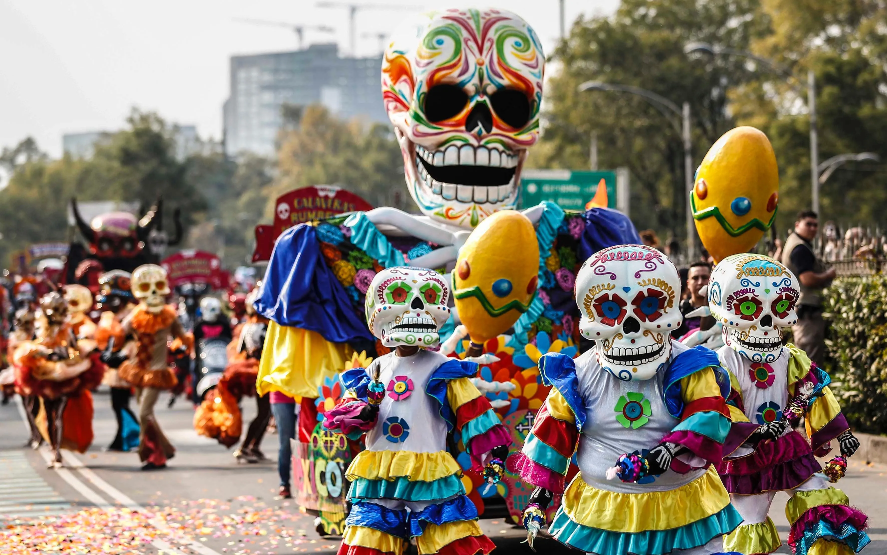
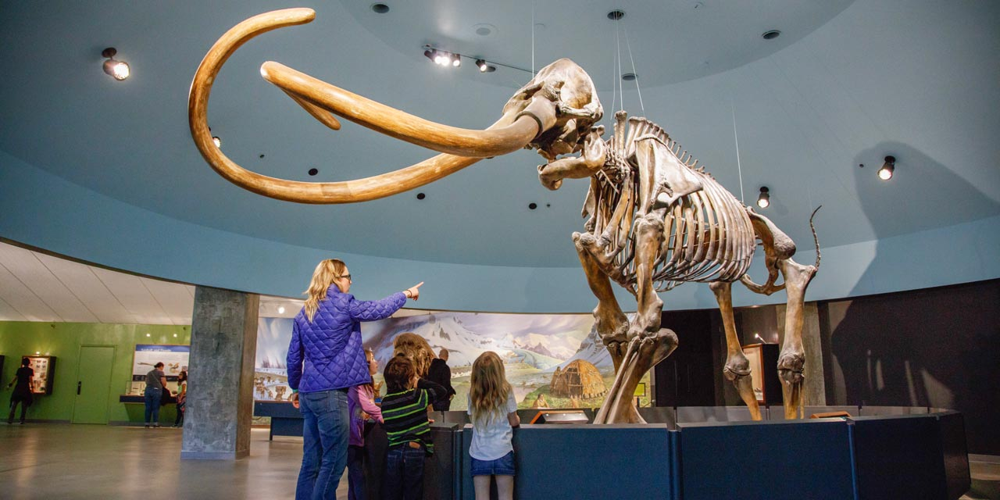
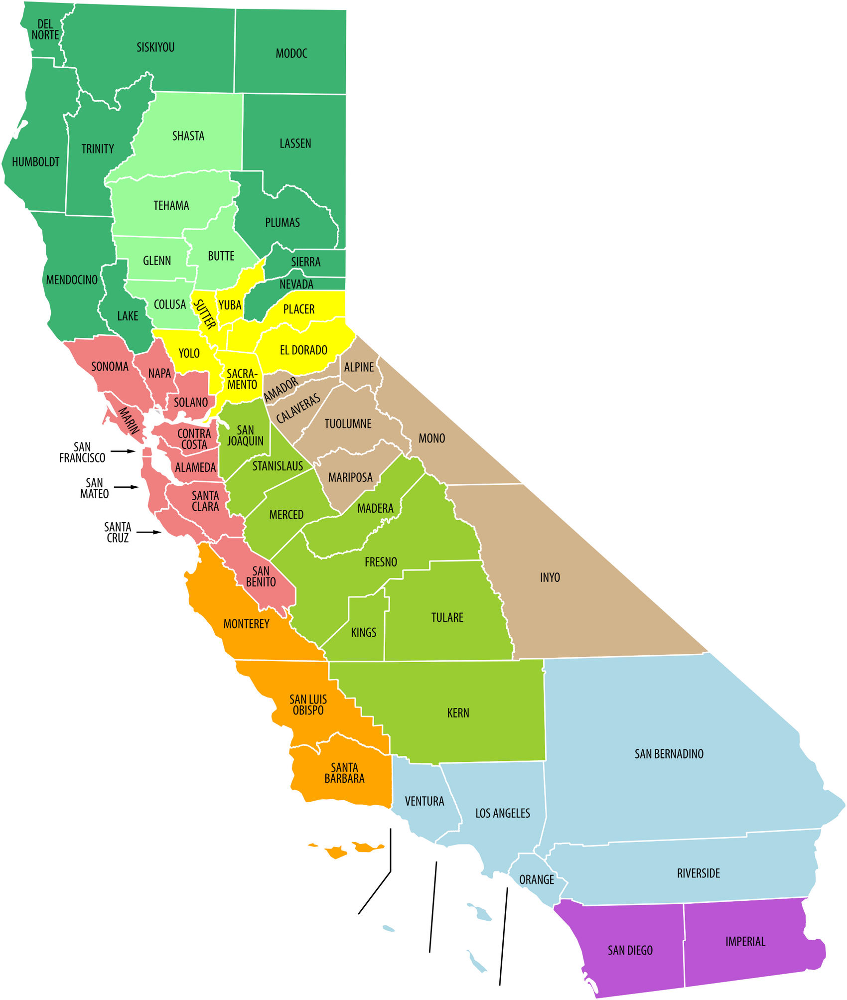
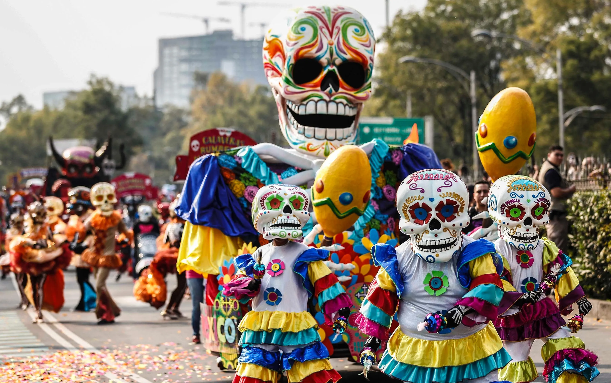
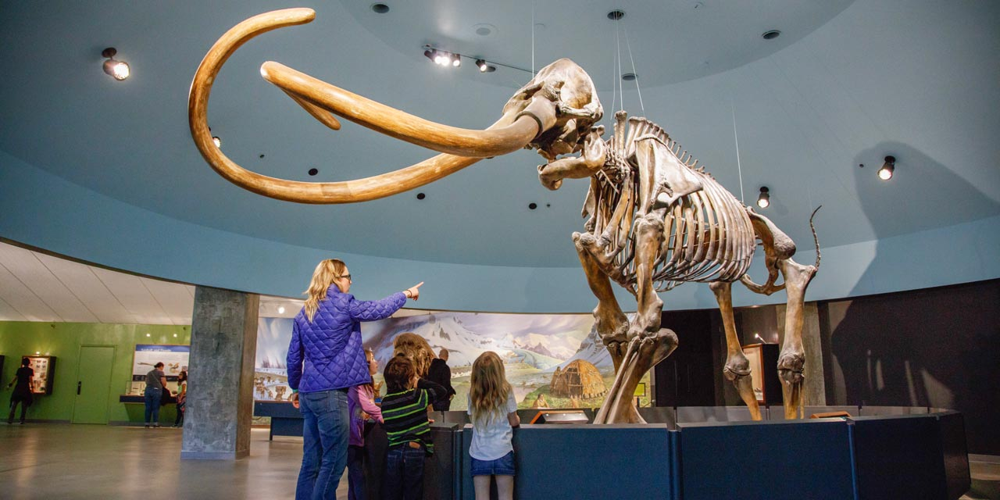
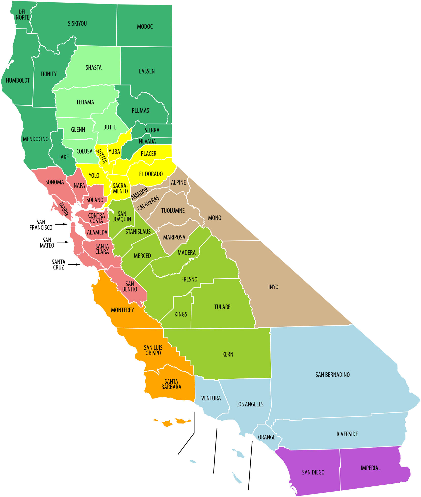

Discover California
From Los Angeles to Yosemite, California is full of diversity and adventure. Explore our site to learn more!
Culture in California
Exploring the rich and diverse culture of California.
Historical Impact
Californian culture has been shaped by many groups of indigenous peoples, Spanish settlers, and immigrants from around the world.
Being colonized by the Spanish in the 18th century has had a lasting legacy when it comes to architecture, place names, and cultural traditions in California.
In the mid 19th century, thanks to the gold rush, immigrants from all over America came to California. This not only increased the population but also spurred development, giving California the image of a place of opportunity and new beginnings.
Diversity within the State
California is known for its diverse population, with significant communities of Latino, Asian, and African American residents, each contributing to the state's cultural mosaic.
Some call the state for a "cultural getaway" due to all the languages spoken, including Spanish, Mandarin, Tagalog, and many others, and they keep hold of their own culture alive, while also contributing to the broader culture of the people around.
Due to this festivals, events, food and artistic presence both thrive and reflects the mosaic. Festivals such as Día de los Muertos and Lunar New Year, are held throughout the state, showcasing the rich traditions of its various communities.
Arts and Entertainment
California is a global hub for arts and entertainment, with it being home to Hollywood and a vibrant music scene that includes everything from classical to hip-hop.
Most people probably think about the film and television industry when they think of entertainment, but the state also has a rich history of visual arts, theater, and dance.
California is also known for its many museums, art galleries theaters and performance venues.
On the inovation side of the state Silicon Valley is a prime example of where that goes down, but more of that in Technology.
Regional Contrasts
California's cultural landscape is marked by regional contrasts, with symbols like the bear flag representing the state's rugged individualism and the Golden Gate Bridge symbolizing innovation and progress.
The north of the state features a more technology-driven culture, with start ups, academic and creative culture.
The south features a more laid back experience with an entertainment-focused lifestyle, including beach culture, Hollywood and immigrant cultures.
The inland parts of the state there is a more "wild" lifestyle. This inculdes agriculture, smaller towns, more indegenous heritage and more taditional ways of life.
Cultural values
The "Californian dream" is still very much a thing with things such as: opportunity, innovation, reinvention, diversity and new frontiers being some of the main points.
Values such as openness awareness of the enviroment and sustainability and are very influential in large parts of the state.
The landscape of mountains, forrests, deserts, etc also shapes worldview, with people identifying with the outdoors, recreation, and activism around preserving the beauty of nature.
 




